Redrawn from the Journey Academy originals
These are drafts. The Kimurodex still shows the old art. Approve, ask for changes, or keep the old one, then press Export my decisions and paste the text to Claude. (Not in the menu and hidden from search engines, but anyone with the address can open it.)
Pavkit / Pavinox / Pavenaxis
קונספט חדש לגמרי לקימורו הזה (אותם שמות ואלמנטים)


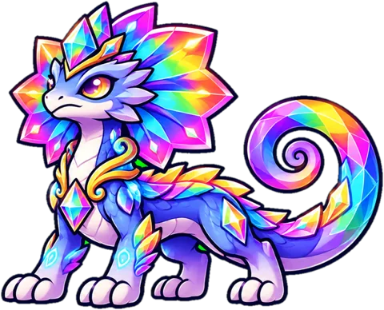
Embkit / Embolt / Embryxal
קונספט חדש לגמרי לקימורו הזה (אותם שמות ואלמנטים)


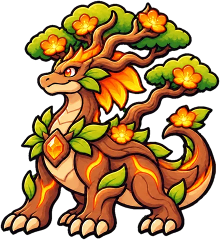
Teryx / Teraxon / Terrakalos
קונספט חדש לגמרי לקימורו הזה (אותם שמות ואלמנטים)


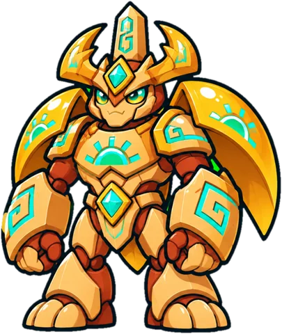
Tigrkit / Tigrawn / Tigracron
קונספט חדש לגמרי לקימורו הזה (אותם שמות ואלמנטים)


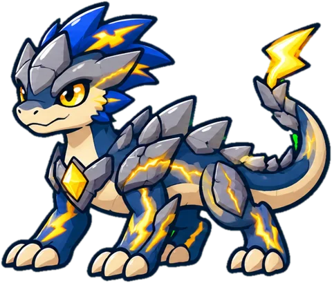
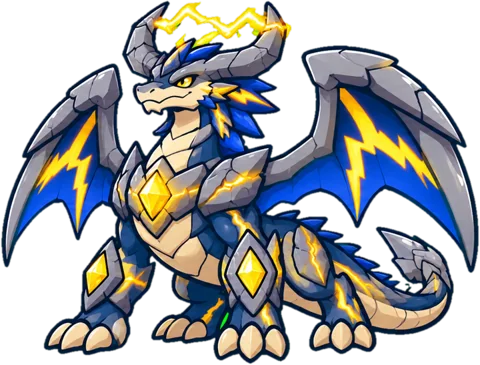
Lynxkit / Lynxorn / Infernlynx
קונספט חדש לגמרי לקימורו הזה (אותם שמות ואלמנטים)


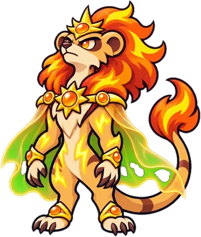
Cygnlet / Cygnaura / Cygnalor
קונספט חדש לגמרי לקימורו הזה (אותם שמות ואלמנטים)


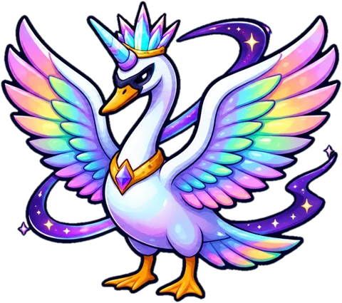
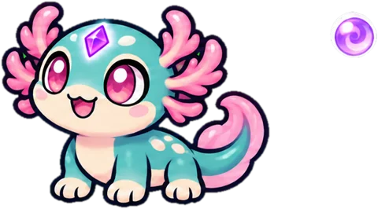
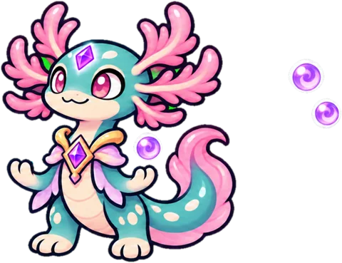
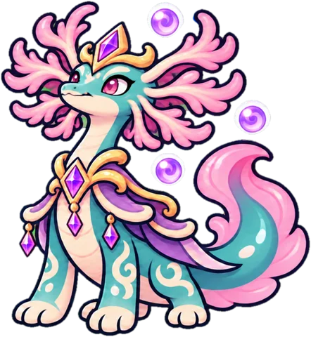
Sparkitt / Strikat / Thunderfang
קונספט חדש לגמרי לקימורו הזה (אותם שמות ואלמנטים)


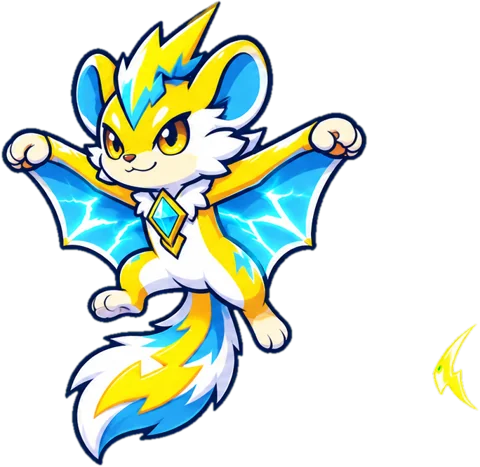

Coralite / Coraleon / Coralarch
קונספט חדש לגמרי לקימורו הזה (אותם שמות ואלמנטים)


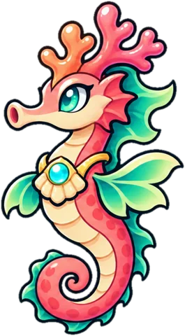
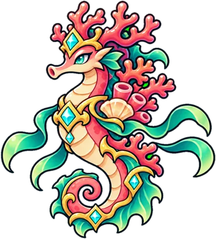
Manteel / Manteelid / Celestmantis
קונספט חדש לגמרי לקימורו הזה (אותם שמות ואלמנטים)


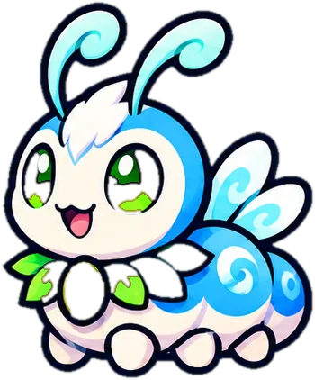
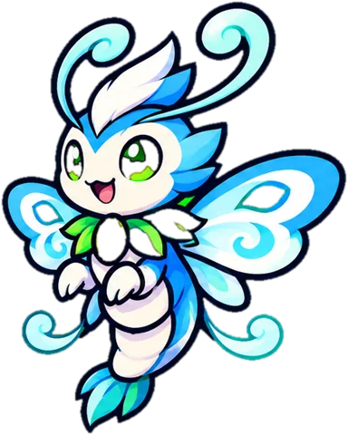

Miaskit / Miasmole / Miasmorph
קונספט חדש לגמרי לקימורו הזה (אותם שמות ואלמנטים)


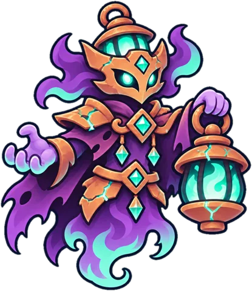
Spinule / Spinara / Spinamorph
קונספט חדש לגמרי לקימורו הזה (אותם שמות ואלמנטים)


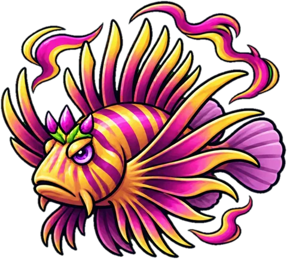

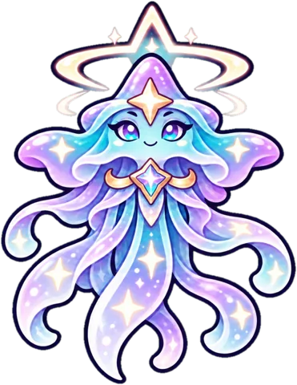
Octryke / Octrapus / Octyrax
קונספט חדש לגמרי לקימורו הזה (אותם שמות ואלמנטים)


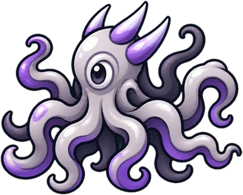
Grimlet / Magrum / Infermagrim
קונספט חדש לגמרי לקימורו הזה (אותם שמות ואלמנטים)


Sparkraven / Inferryx / Phoenixolt
קונספט חדש לגמרי לקימורו הזה (אותם שמות ואלמנטים)


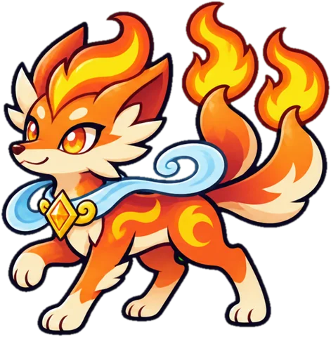
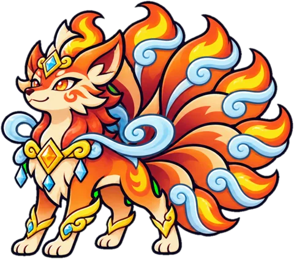
Tinwhyx / Spirwhyx / Maelwyx
קונספט חדש לגמרי לקימורו הזה (אותם שמות ואלמנטים)


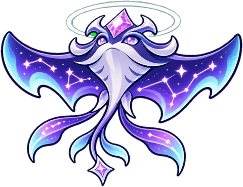
Gemurp / Gemurite / Crystallion
קונספט חדש לגמרי לקימורו הזה (אותם שמות ואלמנטים)


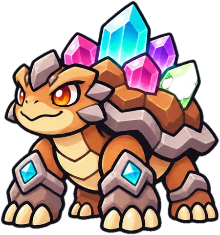
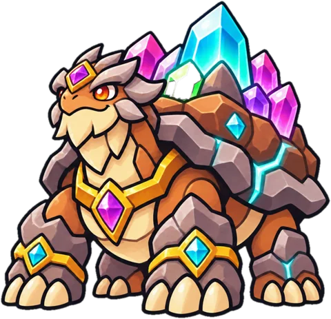
Scorcule / Scorvenom / Infermarx
קונספט חדש לגמרי לקימורו הזה (אותם שמות ואלמנטים)
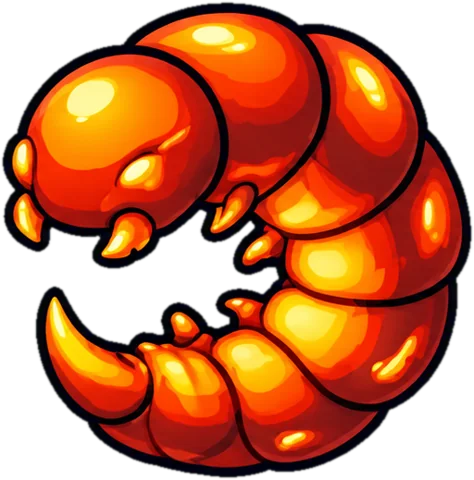


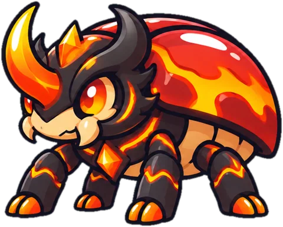

Owlite / Twilight / Celestowl
קונספט חדש לגמרי לקימורו הזה (אותם שמות ואלמנטים)


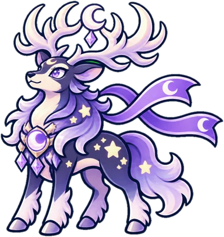
Woolusk / Mammoxen / Primammoth
קונספט חדש לגמרי לקימורו הזה (אותם שמות ואלמנטים)


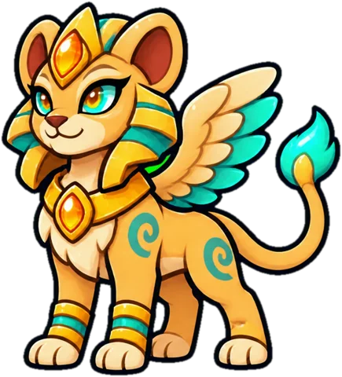
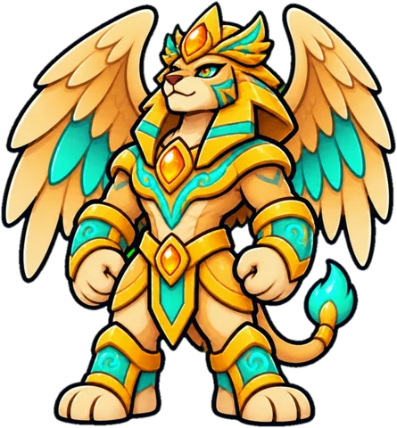
Aurkit / Aurfang / Aurmawlix
חזר לירוק המקורי, בלי צמידי הזהב בשלב 2


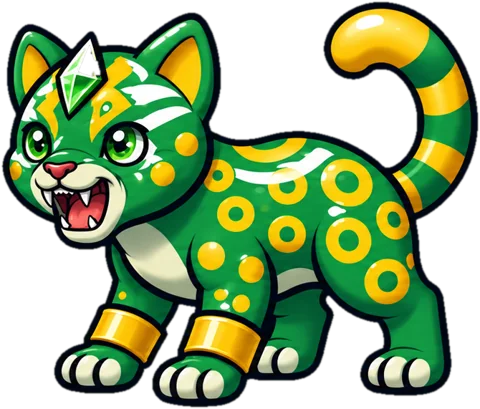
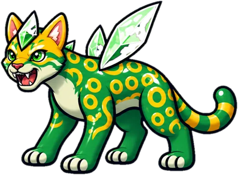

Sparkmouse / Voltail / Thunderwing
קו חדש א: Sparkmouse (שלב 1 כמו שהיה) עם שלבים 2 ו-3 חדשים
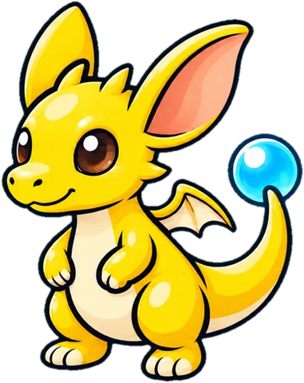


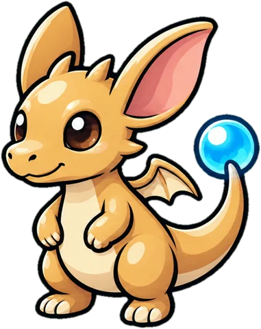
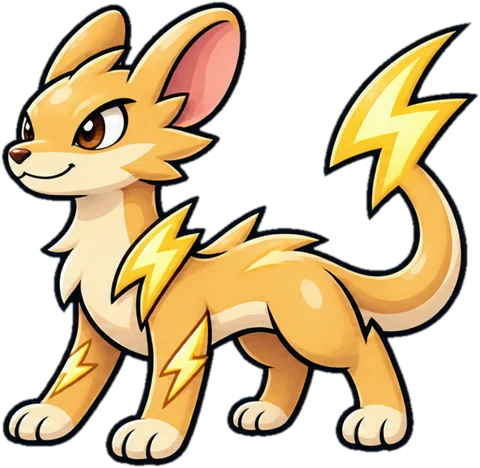
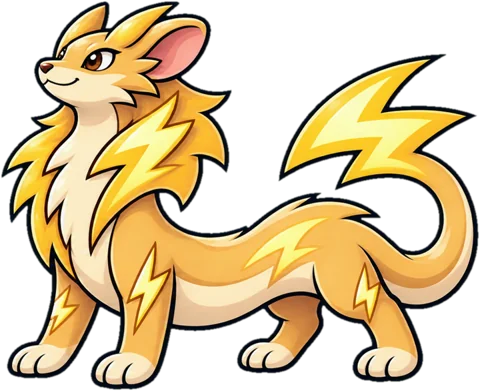
Sparkmouse / Voltail / Thunderwing
קו חדש ב: Voltail ו-Thunderwing (שלבים 2-3 כמו שהיו) עם שלב 1 חדש
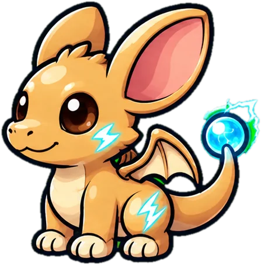
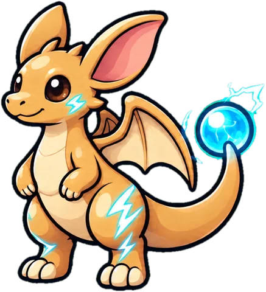
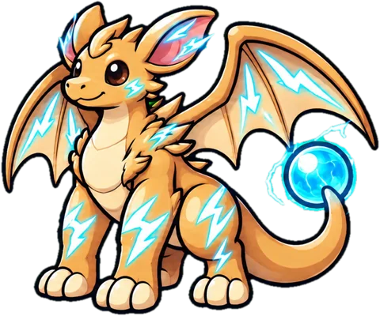